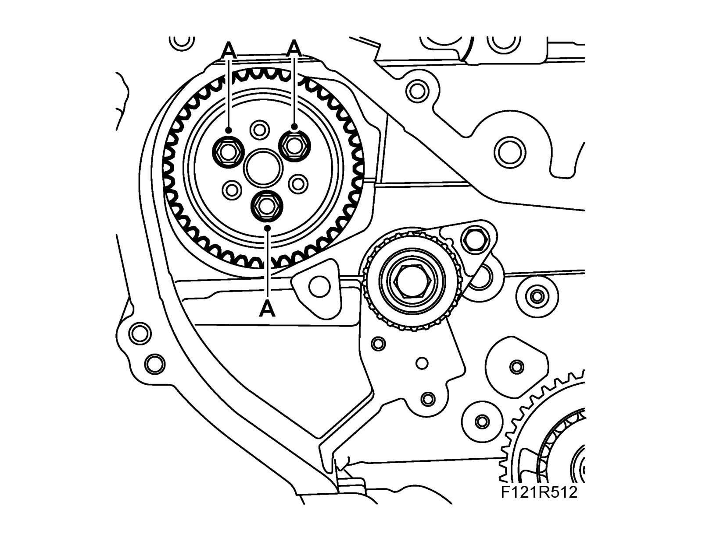

Balance Shaft Pulley: Service and Repair
Idler wheel, balancer shaft chain circuitTo remove
1. Remove the balancer shaft chain.
2. Remove the idler wheel bolts (A).

To fit
1. Fit the idler wheel bolts (A).
Tightening torque 10 Nm (7 lbf ft)
2. Fit the balancer shaft chain.